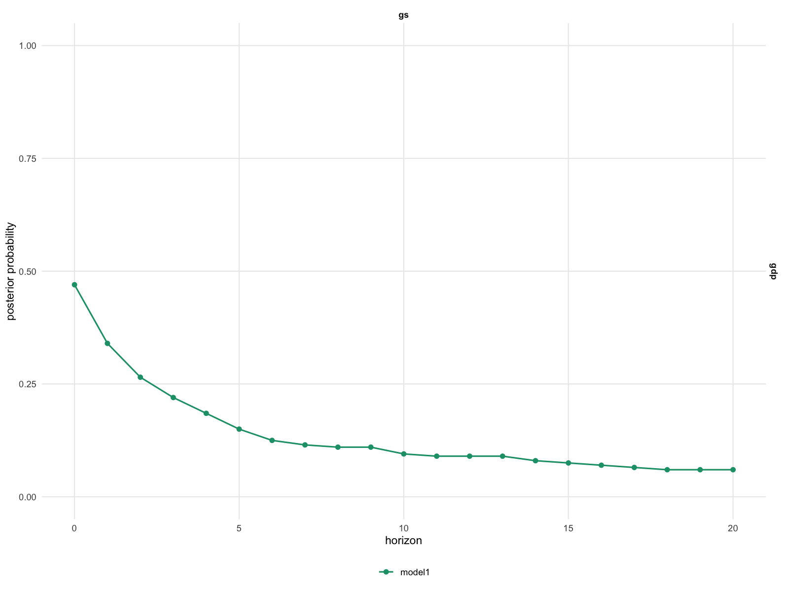

Bayesian structural VARs produce full posterior distributions over
impulse responses and cumulative dynamic multipliers — not just point
estimates. bsvarPost turns this richness into formal
probability statements: instead of asking “is the effect significant?”,
researchers can ask “what fraction of posterior draws show a positive
GDP response to a fiscal spending shock at horizon 8?”
This vignette demonstrates four tools: pointwise hypotheses
(hypothesis_irf()), joint hypotheses
(joint_hypothesis_irf()), simultaneous credible bands
(simultaneous_irf()), and magnitude auditing
(magnitude_audit()). All examples use the same
us_fiscal_lsuw fiscal policy narrative — does a government
spending shock (gs) increase output (gdp)?
Estimation code (not run during R CMD check):
library(bsvarPost)
library(bsvars)
data(us_fiscal_lsuw, package = "bsvars")
set.seed(123)
spec <- specify_bsvar$new(us_fiscal_lsuw, p = 1)
post <- estimate(spec, S = 200, show_progress = FALSE)Pointwise posterior probabilities
The most direct question: what fraction of posterior draws satisfy a condition at a given horizon?
# Posterior probability that gdp responds positively to gs at horizon 8
h_irf <- hypothesis_irf(
post,
variables = 3,
shocks = 2,
horizon = 8,
relation = ">",
value = 0
)
h_irf
#> # A tibble: 1 × 16
#> model object_type variable shock horizon relation posterior_prob mean_gap
#> <chr> <chr> <chr> <chr> <dbl> <chr> <dbl> <dbl>
#> 1 model1 irf gdp gs 8 > 0.11 -0.00186
#> # ℹ 8 more variables: median_gap <dbl>, lower_gap <dbl>, upper_gap <dbl>,
#> # rhs_variable <chr>, rhs_shock <chr>, rhs_horizon <dbl>, rhs_value <dbl>,
#> # absolute <lgl>The posterior_prob column reports the fraction of draws
satisfying the condition — a direct probability statement, not a
p-value.
The same test applies to cumulative dynamic multipliers (CDMs), the standard measure of fiscal multiplier effects:
# Same test for the cumulative dynamic multiplier at horizon 8
h_cdm <- hypothesis_cdm(
post,
variables = 3,
shocks = 2,
horizon = 8,
relation = ">",
value = 0
)
h_cdm
#> # A tibble: 1 × 16
#> model object_type variable shock horizon relation posterior_prob mean_gap
#> <chr> <chr> <chr> <chr> <dbl> <chr> <dbl> <dbl>
#> 1 model1 cdm gdp gs 8 > 0.185 -0.00840
#> # ℹ 8 more variables: median_gap <dbl>, lower_gap <dbl>, upper_gap <dbl>,
#> # rhs_variable <chr>, rhs_shock <chr>, rhs_horizon <dbl>, rhs_value <dbl>,
#> # absolute <lgl>Both functions return a bsvar_post_tbl with the
posterior probability, mean and median gap from the threshold, and
equal-tailed credible bounds.
Joint posterior hypotheses
A stronger question is whether GDP is positive at every horizon from impact through horizon 8. This joint probability is typically much lower than any single pointwise probability.
# Joint probability: gdp positive at ALL horizons 0 through 8
jh <- joint_hypothesis_irf(
post,
variable = "gdp",
shock = "gs",
horizon = 0:8,
relation = ">",
value = 0
)
jh
#> # A tibble: 1 × 13
#> model object_type relation posterior_prob n_constraints variable shock horizon
#> <chr> <chr> <chr> <dbl> <int> <chr> <chr> <chr>
#> 1 mode… joint_irf > 0.095 9 gdp gs 0,1,2,…
#> # ℹ 5 more variables: rhs_variable <chr>, rhs_shock <chr>, rhs_horizon <dbl>,
#> # rhs_value <dbl>, absolute <lgl>n_constraints records how many conditions were
intersected. A pre-rendered figure showing the probability profile
across horizons:

The figure illustrates how pointwise probabilities can remain high while the joint probability is substantially lower — any draw that fails at even one horizon is excluded from the joint count.
Simultaneous credible bands
Pointwise credible intervals cover each horizon independently. Simultaneous bands are wider but provide the stronger guarantee: with 90% posterior probability, the entire IRF path lies inside the band.
# 90% simultaneous band for the gdp response to the gs shock
sim_irf <- simultaneous_irf(
post,
horizon = 20,
variables = 3,
shocks = 2
)
head(sim_irf)
#> # A tibble: 6 × 10
#> model object_type variable shock horizon median lower upper
#> <chr> <chr> <chr> <chr> <dbl> <dbl> <dbl> <dbl>
#> 1 model1 simultaneous_irf gdp gs 0 -0.0000935 -0.00317 0.00299
#> 2 model1 simultaneous_irf gdp gs 1 -0.000250 -0.00333 0.00283
#> 3 model1 simultaneous_irf gdp gs 2 -0.000424 -0.00350 0.00266
#> 4 model1 simultaneous_irf gdp gs 3 -0.000557 -0.00364 0.00252
#> 5 model1 simultaneous_irf gdp gs 4 -0.000702 -0.00378 0.00238
#> 6 model1 simultaneous_irf gdp gs 5 -0.000839 -0.00392 0.00224
#> # ℹ 2 more variables: simultaneous_prob <dbl>, critical_value <dbl>The critical_value column records the sup-norm
threshold: draws whose maximum deviation from the posterior median
exceeds this value are excluded. The same approach applies to CDMs:
# 90% simultaneous band for the cumulative fiscal multiplier
sim_cdm <- simultaneous_cdm(
post,
horizon = 20,
variables = 3,
shocks = 2
)
head(sim_cdm)
#> # A tibble: 6 × 10
#> model object_type variable shock horizon median lower upper
#> <chr> <chr> <chr> <chr> <dbl> <dbl> <dbl> <dbl>
#> 1 model1 simultaneous_cdm gdp gs 0 -0.0000935 -0.0384 0.0382
#> 2 model1 simultaneous_cdm gdp gs 1 -0.000302 -0.0386 0.0380
#> 3 model1 simultaneous_cdm gdp gs 2 -0.000748 -0.0391 0.0376
#> 4 model1 simultaneous_cdm gdp gs 3 -0.00134 -0.0397 0.0370
#> 5 model1 simultaneous_cdm gdp gs 4 -0.00211 -0.0404 0.0362
#> 6 model1 simultaneous_cdm gdp gs 5 -0.00295 -0.0413 0.0354
#> # ℹ 2 more variables: simultaneous_prob <dbl>, critical_value <dbl>The CDM band covers the entire cumulative multiplier path from impact through horizon 20 with 90% posterior probability.
Magnitude auditing
Beyond sign, researchers often care about magnitude. What fraction of draws show a fiscal multiplier exceeding 1.0 at horizon 8?
mag_base <- magnitude_audit(
post,
type = "cdm",
variable = "gdp",
shock = "gs",
horizon = 8,
relation = ">",
value = 1
)
#> Warning: In hypothesis_cdm(): 'variable' is deprecated and will be removed in a future version.
#> Use 'variables' instead.
#> Warning: In hypothesis_cdm(): 'shock' is deprecated and will be removed in a future version.
#> Use 'shocks' instead.
mag_base
#> # A tibble: 1 × 17
#> model object_type variable shock horizon relation posterior_prob mean_gap
#> <chr> <chr> <chr> <chr> <dbl> <chr> <dbl> <dbl>
#> 1 model1 cdm gdp gs 8 > 0 -1.01
#> # ℹ 9 more variables: median_gap <dbl>, lower_gap <dbl>, upper_gap <dbl>,
#> # rhs_variable <chr>, rhs_shock <chr>, rhs_horizon <dbl>, rhs_value <dbl>,
#> # absolute <lgl>, audit_type <chr>magnitude_audit() reports how often the posterior
satisfies a magnitude condition — it does not constrain the model.
Comparing across lag lengths:
mag_alt <- magnitude_audit(
post_alt,
type = "cdm",
variable = "gdp",
shock = "gs",
horizon = 8,
relation = ">",
value = 1
)
#> Warning: In hypothesis_cdm(): 'variable' is deprecated and will be removed in a future version.
#> Use 'variables' instead.
#> Warning: In hypothesis_cdm(): 'shock' is deprecated and will be removed in a future version.
#> Use 'shocks' instead.
mag_alt
#> # A tibble: 1 × 17
#> model object_type variable shock horizon relation posterior_prob mean_gap
#> <chr> <chr> <chr> <chr> <dbl> <chr> <dbl> <dbl>
#> 1 model1 cdm gdp gs 8 > 0.005 -0.266
#> # ℹ 9 more variables: median_gap <dbl>, lower_gap <dbl>, upper_gap <dbl>,
#> # rhs_variable <chr>, rhs_shock <chr>, rhs_horizon <dbl>, rhs_value <dbl>,
#> # absolute <lgl>, audit_type <chr>A higher posterior_prob in the alternative 3-lag
specification indicates more support for large multipliers when richer
lag dynamics are allowed.
Comparing hypothesis results across models
Collecting pointwise probabilities for both models and formatting
with as_kable() gives a compact comparison:
h_base <- hypothesis_irf(post, variables = 3, shocks = 2,
horizon = 0:8, relation = ">", value = 0, model = "p=1")
h_alt <- hypothesis_irf(post_alt, variables = 3, shocks = 2,
horizon = 0:8, relation = ">", value = 0, model = "p=3")
as_kable(h_base, digits = 2, preset = "compact")| Model | Variable | Shock | Horizon | Relation | Posterior probability | Mean gap | Median gap | Lower gap | Upper gap |
|---|---|---|---|---|---|---|---|---|---|
| p=1 | gdp | gs | 0 | > | 0.47 | 0 | 0 | 0 | 0 |
| p=1 | gdp | gs | 1 | > | 0.34 | 0 | 0 | 0 | 0 |
| p=1 | gdp | gs | 2 | > | 0.26 | 0 | 0 | 0 | 0 |
| p=1 | gdp | gs | 3 | > | 0.22 | 0 | 0 | 0 | 0 |
| p=1 | gdp | gs | 4 | > | 0.18 | 0 | 0 | 0 | 0 |
| p=1 | gdp | gs | 5 | > | 0.15 | 0 | 0 | 0 | 0 |
| p=1 | gdp | gs | 6 | > | 0.12 | 0 | 0 | 0 | 0 |
| p=1 | gdp | gs | 7 | > | 0.12 | 0 | 0 | 0 | 0 |
| p=1 | gdp | gs | 8 | > | 0.11 | 0 | 0 | 0 | 0 |
as_kable(h_alt, digits = 2, preset = "compact")| Model | Variable | Shock | Horizon | Relation | Posterior probability | Mean gap | Median gap | Lower gap | Upper gap |
|---|---|---|---|---|---|---|---|---|---|
| p=3 | gdp | gs | 0 | > | 0.38 | 0.00 | 0 | 0 | 0 |
| p=3 | gdp | gs | 1 | > | 0.42 | 0.00 | 0 | 0 | 0 |
| p=3 | gdp | gs | 2 | > | 0.31 | 0.00 | 0 | 0 | 0 |
| p=3 | gdp | gs | 3 | > | 0.28 | 0.00 | 0 | 0 | 0 |
| p=3 | gdp | gs | 4 | > | 0.27 | 0.01 | 0 | 0 | 0 |
| p=3 | gdp | gs | 5 | > | 0.24 | 0.02 | 0 | 0 | 0 |
| p=3 | gdp | gs | 6 | > | 0.22 | 0.06 | 0 | 0 | 0 |
| p=3 | gdp | gs | 7 | > | 0.21 | 0.17 | 0 | 0 | 0 |
| p=3 | gdp | gs | 8 | > | 0.20 | 0.46 | 0 | 0 | 0 |
Stable probabilities across lag specifications strengthen the economic conclusion; large shifts suggest specification sensitivity.
Summary
bsvarPost provides a coherent hypothesis testing toolkit
for Bayesian SVAR analysis:
-
hypothesis_irf()/hypothesis_cdm(): pointwise posterior probabilities at specified horizons -
joint_hypothesis_irf(): joint probability across all selected horizons -
simultaneous_irf()/simultaneous_cdm(): bands covering the full path -
magnitude_audit(): how often a magnitude condition is satisfied
All results are proper Bayesian posterior probability statements, not frequentist p-values: a probability of 0.92 means 92% of posterior draws satisfy the condition, with no asymptotic approximation required.